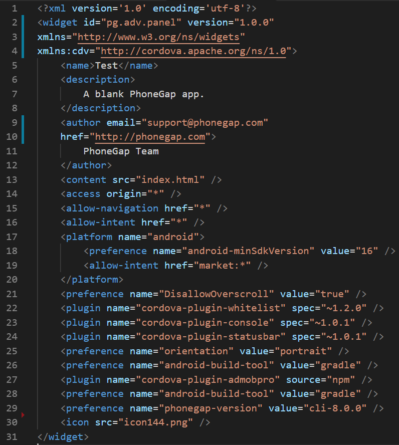

In order to be able to build an apk, we need to configure the config.xml file which resides in www folder. Make the following changes to the config.xml file:

Instead of typing in all the above, you can copy and paste the contents from here: bit.ly/2UJqASB
That's all for this lesson. In the next lesson we will upload our project to github so that we can build an apk using build.phonegap.com.